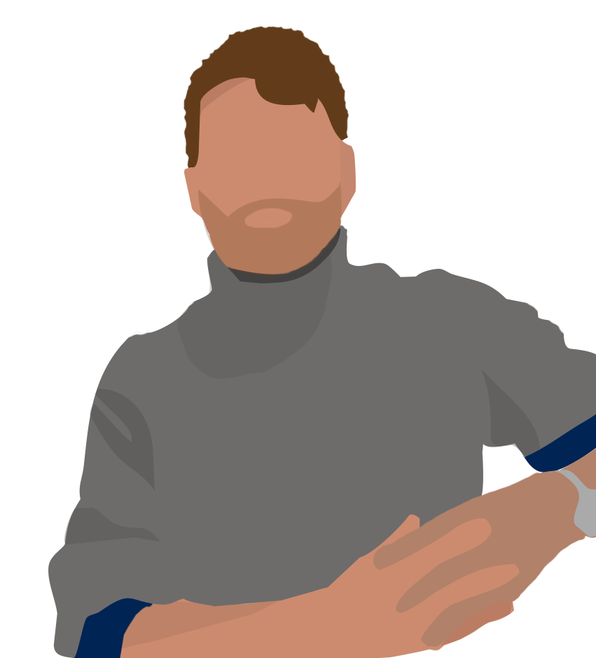
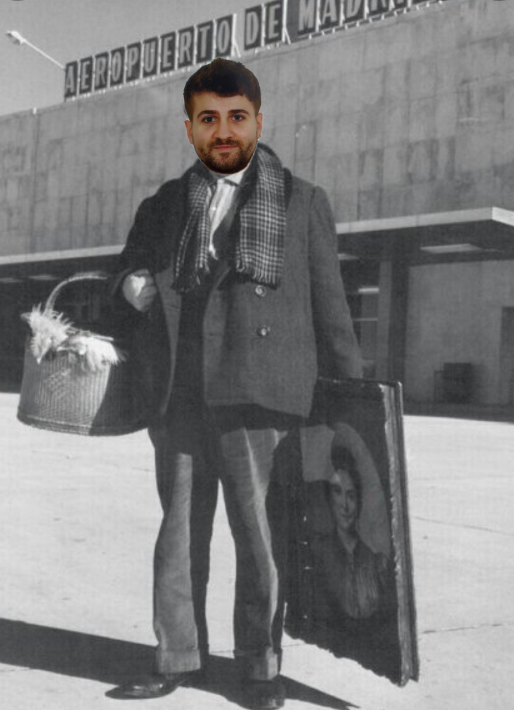
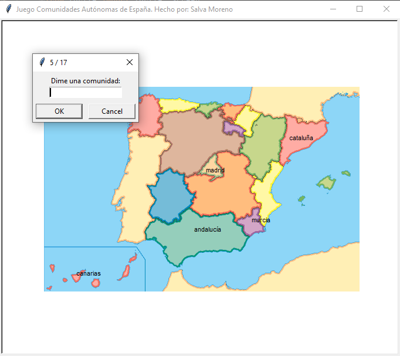
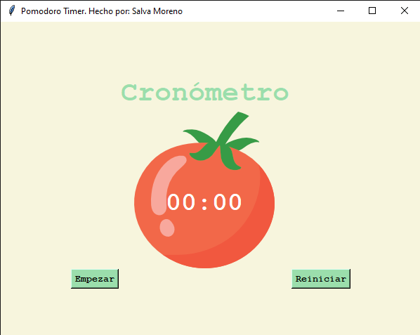
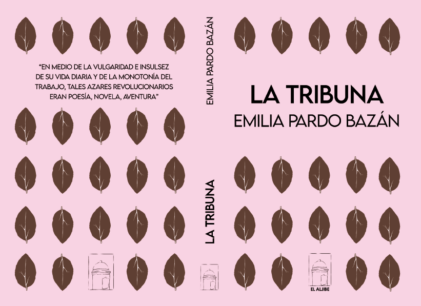
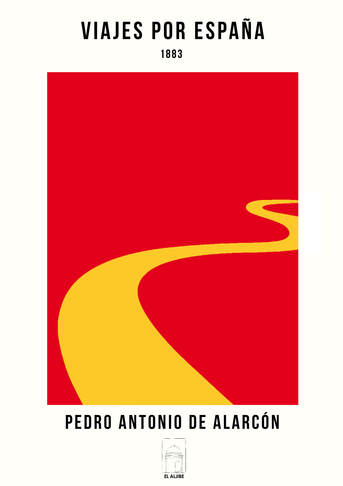

¡Hola, soy Salva!
Estudiante del Máster en Letras Digitales en la Universidad Complutense de Madrid y estoy buscando prácticas curriculares en empresa.
SOBRE MÍ
¿Quién es Salva?
Soy un apasionado del deporte, la enseñanza, los videojuegos, la literatura, la historia y, actualmente, del código, con el que sentí un flechazo hace escasos meses.
Me encanta crear, explorar, pensar cómo hacer las cosas mejor cuidando los detalles y, sobre todo, aprender constantemente.
Saber escuchar ha sido siempre una de las habilidades que más destaco sobre mí. Además, me encanta hacerlo. Es el primer paso para poder comprender el mundo, ayudar y avanzar. De esta forma, me encanta la docencia y todas las manifestaciones comunicativas del ser humano (lenguaje hablado, escrito, matemático...). Me permiten escuchar, analizar y buscar soluciones. Actualmente, he descubierto el lenguaje de programación, el cual me ha lanzado a un mundo que me apasiona y en el que, a través de la comprensión del funcionamiento tecnológico, puedo aplicar mis conocimientos en didáctica, psicología, literatura, historia, matemáticas, etc. para elaborar productos acorde con las necesidades del cliente.
La multidisciplinariedad y la transversalidad de mi formación es uno de los puntos fuertes que me caracterizan, poseyendo un perfil versátil.

FORMACIÓN
Breve resumen de mi carrera académica
| Año | Formación | Desarrollo | |
|---|---|---|---|
| 2012-2014 | Bachillerato Ciencias | Aprendizaje de las nociones básicas culturales sobre Matemáticas, Química, Biología, etc. | |
| 2014-2018 | Grado en Educación Primaria en la Universidad de Granada | Adquisición de los conocimientos necesarios para ofrecer una enseñanza de calidad, atendiendo a los aspectos didácticos, curriculares y psicológicos del alumnado. Manejé herramientas como Audacity, eXeLearning, etc. | |
| 2018 | Erasmus de seis meses en Roma | Una de las mejores experiencias de mi vida, donde aprendí un nuevo idioma y me introduje de lleno en otra cultura | |
| 2018-2019 | Oposiciones al cuerpo de maestros en Andalucía | Realización del examen teórico-práctico con resultado aprobado pero sin la consecución de plaza | |
| 2019-2021 | Grado en Lengua y Literatura Españolas en la UNED | Hasta ahora, poseo la mitad del grado, donde he profundizado con éxito en gran parte de la literatura y lengua españolas, he aprendido a manejar herramientas como Praat para el análisis fonético y fonológico, etc. | |
| 2021-2022 | Máster en Letras Digitales en la Universidad Complutense de Madrid | Introducción a HTML, CSS, JavaScript, Bootstrap, XML, anotación TEI, Adobe Acrobat, Sigil, Adobe Illustrator, programación, etc. | |
| # | Universidad o escuela | Curso realizado | Horas |
| 1 | Universidad Rey Juan Carlos | La pizarra digital como recurso educativo y elaboración de materiales didácticos interactivos | 120 |
| 2 | Universidad Rey Juan Carlos | Habilidades de la comunicación verbal y no verbal como docente | 120 |
| 3 | Universidad Rey Juan Carlos | Educación creativa | 120 |
| 4 | UNED | Metodologías activas para el aprendizaje ubicuo y móvil | 20 |
| 5 | Udemy (cursando) | 100 Days of Code: The Complete Python Pro Bootcamp for 2022 | 65 |
| 6 | Udemy (cursando) | The Complete 2022 Web Development Bootcamp | 55 |
| 7 | Udemy (cursando) | [Official] Rasa Certification Workshop | 6 |
| 8 | Udemy (cursando) | Procesamiento del Lenguaje Natural con Python (NLP) [2022] | 3 |
IDIOMAS
Lenguas que he ido aprendiendo y sigo mejorando
INGLÉS 🥪 Language Cert B2 (título homologado)
ITALIANO 🍕 PLIDA B2 (título homologado)
FRANCÉS 🥖
GALLEGO 🦀
SUPERVIVENCIA
¿Cómo sobrevive un granadino en Madrid?
Con el único objetivo de pagar el alquiler y cumplir con mis necesidades nutritivas, trabajo impartiendo clases particulares en línea a alumnos y alumnas de Granada (cosa que hacía antes de forma presencial desde los 18 años) y, aquí en Madrid, desempeño un puesto de trabajo como profesor de Matemáticas en Academia FormaT.
Además, colaboro con la revista digital Academia Play, donde elaboro y maqueto en WordPress mis artículos sobre temas de diversa índole, sobre todo de Historia, disciplina que me apasiona.

HERRAMIENTAS
Algunas de las herramientas que conozco
HTML5
CSS3
JavaScript
Bootstrap
VS Code
Python
Jupyter
PyCharm
Pandas
WordPress
Actualmente trabajando en:
Seguir aprendiendo Python y sus librerías (NLTK, Matplotlib, etc.), adentrarme a fondo en JavaScript, continuar aprendiendo la programación enfocada a los asistentes conversacionales (actualmente aprendiendo Rasa con el curso oficial que se encuentra en Udemy) y explorar nuevos motores de desarrollo y edición de videojuegos (Unity y MagicaVoxel, por ejemplo). Todo ello lo hago de forma autónoma a través de cursos en Udemy en los que sigo avanzando y adquiriendo más habilidades.
PROYECTOS
Una selección de los proyectos que he realizado
Base de datos que almacena actores, actrices y películas
Esta base de datos fue mi primer "gran" proyecto en Python y al que le guardo cierto cariño. Con ella podemos introducir actores, actrices y películas para almacenarlos en dos archivos externos, uno para actores y otro para películas. Además, con todos los datos que introduzcamos podemos realizar búsquedas, como, por ejemplo, que nos devuelva la lista de actores y actrices de una determinada franja de edad; la lista de películas según su duración estimada; la lista de actores que han participado en una película concreta, relacionando, así, los dos archivos de nuestra base de datos; etc.
Snake Game
Con Python y a través de la librería turtle, conseguí realizar el mítico juego de la serpiente, el cual cumple con todo el reglamento (si te estrellas contra la pared o te comes, pierdes y se reinicia el juego) y, además, la puntuación más alta se guarda en un archivo externo y se refleja en pantalla. Solo se cambiará si la puntuación actual supera a la guardada.
Todo ello lo conseguí gracias a múltiples búsquedas por Internet (gracias Stack Overflow, te mando un beso) y a un curso en Udemy sobre Python al que asisto. Significa un proyecto que me ha causado una gran satisfacción completarlo.

Juego educativo sobre las Comunidades Autónomas de España
Con Python y la librería turtle, hice un juego educativo para afianzar conocimientos sobre las Comunidades Autónomas de España.
En pantalla aparece el mapa de España y en un recuadro debes introuducir el nombre de las Comunidades; si aciertas, el nombre aparece en el mapa. Las Comunidades que no se sepan, se guardarán en un archivo externo para poder consultarlas y estudiarlas.

Cronómetro que se rige por la famosa técnica Pomodoro de Francesco Cirillo
Con la librería tkinter de Python, conformé un cronómetro que me ayuda a gestionar mi tiempo de estudio y trabajo siguiendo la técnica Pomodoro de Francesco Cirillo.
Al pulsar el botón "Empezar", comienza una cuenta atrás de 25 minutos, los cuales se dedican al estudio intenso y sin distracciones. Pasados estos, el programa aparece en pantalla, aun estando minimizado, para avisarte de que empieza otra cuenta atrás de 5 minutos destinados al descanso. Cuando se completan 4 series, se descansa durante 20 minutos.
SalvaBot: la entrevista de trabajo
Se trata de un bot que se hace pasar por mí y responde a diversas preguntas, simulando una entrevista laboral. El bot obtiene la respuesta de un archivo externo que procesa a través de la librería NLTK, encuentra palabras comunes con la pregunta y, de esta forma, produce la respuesta. Así, como se puede ver en el vídeo, introduzco las palabras clave sin tildes, con el objetivo de que las capte.
El código de este proyecto lo he obtenido de un curso de Udemy en el que sigo aprendiendo. Aunque no lo he construido en su totalidad, he sido capaz de leer el código y modificar las partes que más me interesaban para obtener el resultado que se puede observar en el vídeo de la izquierda.
Este proyecto me ha servido para conocer más el uso de la librería NLTK y pensar sobre intents, entities, etc.

Edición de La Tribuna de Emilia Pardo Bazán con Adobe Acrobat
Como proyecto para una asignatura del Máster, realicé un PDF listo para imprenta de la obra La Tribuna de la coruñesa Emilia Pardo Bazán con Adobe Acrobat.
Conseguí la obra libre de derechos en la web Proyecto Gutenberg, me peleé y la maqueté en Word, realicé la cubierta en Photoshop (foto de la izquierda) y, por último, convertí el archivo a PDF con Adobe Acrobat y aquí hice los últimos retoques.

Edición de los Viajes por España de Pedro Antonio de Alarcón en formato EPUB
Como proyecto para una asignatura del Máster, realicé un EPUB de la obra Viajes por España del granadino Pedro Antonio de Alarcón con la herramienta Sigil.
Conseguí la obra libre de derechos en la web Proyecto Gutenberg, la maqueté en Sigil con código XHTML, realicé una cubierta en Photoshop (foto de la izquierda) y, por último, convertí el archivo a AZW con Calibre para que pueda ser leído también en Kindle. Obtuve la máxima calificación.
TESTIMONIOS
Cosas bonitas que la gente ha dicho
Manifestando en todo momento mucho interés, aptitud, actitud y esfuerzo no solo en mi materia sino en todas las que cursó. Durante el proceso de desarrollo de la materia de Organización, Salvador realizó un trabajo comparativo entre la ley educativa española y la italiana, obteniendo la máxima calificación. Salvador es, además de buen estudiante, una gran persona.
Salva es una persona que lo hace todo fácil. Puede parecer una afirmación un poco simple, pero no lo es; porque la capacidad de hacer la vida fácil es un asunto verdaderamente difícil y al alcance de algunos pocos que, como él, no se quedan en los extremos sino en los matices, en lo relevante tras la urgencia que nos ciega a los demás.
Nunca pierde la capacidad de sorprenderse. Con lo mundano y con lo alucinante. Y no sé si es por empeño, porque es Piscis o por Camarón de la Isla, pero es realmente como el agua. Se adapta como si ya conociera todo lo que se le pone por delante. Un poco como Bruce Lee, pero sin las patadas.
CONTACTO
¡Saludémonos!
© 2022 | Diseñado y codificado con 💛 por Salva Moreno